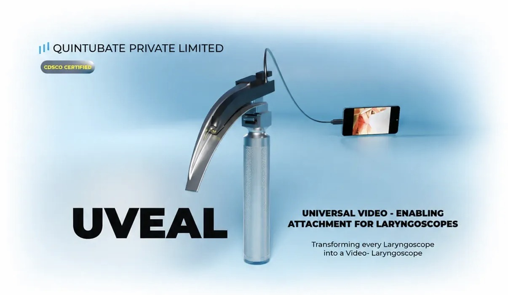
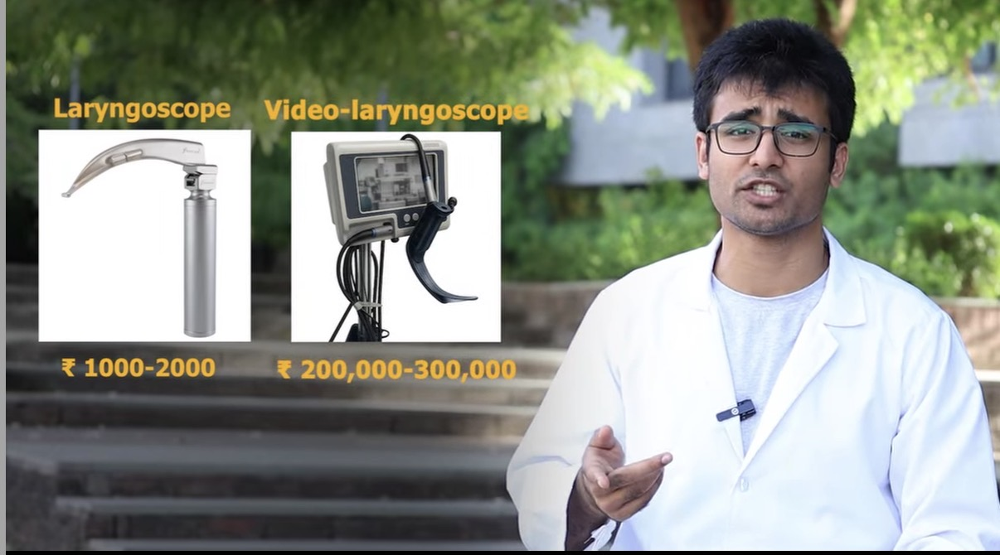
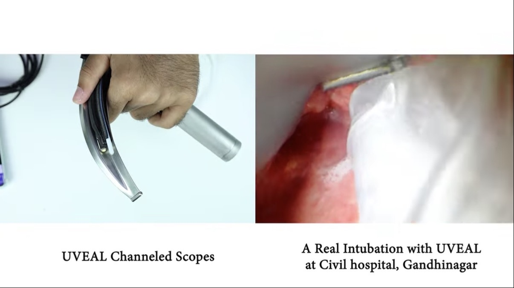
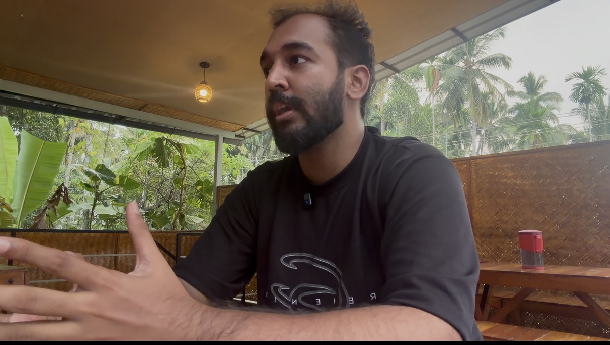

Before I Leave Medical College · A conversationConversation 01

On medical education, from a house surgeon’s lens
A conversation with Dr. Maanas Jain.
The story of Quintubate.
Before I Leave Medical College · A conversationThe premise
MBBS is the foundation of every doctor’s career. Right now, it feels undervalued.
This series is about bringing that value back, and about what the foundation can lead to.
This one sits between the series and People of Healthcare: a doctor who set out to build.
Before I Leave Medical College · A conversationMeet
Dr. Maanas Jain
Founder and CTO, Quintubate Pvt Ltd
MBBS, AIIMS Jodhpur
Internal Medicine, Rutgers University, USA
Sources: Dr. Jain’s Instagram profile (@quintubate); his answers to People of Healthcare.
Before starting residency, he set out to build Quintubate.
Before I Leave Medical College · A conversationThe gap
A laryngoscope costs ₹1,000 to 2,000. A video-laryngoscope costs lakhs.

Source: figures as shown in Dr. Jain’s own video. ₹2,00,000 to ₹3,00,000 for a video-laryngoscope.
Before I Leave Medical College · A conversationThe device
UVEAL: turning the laryngoscope a hospital already has into a video-laryngoscope.
A universal video-enabling attachment that sends the view to a smartphone.
Source: quintubate.com. The company describes UVEAL as smartphone-powered, compatible with existing laryngoscopes, and starting under ₹10,000; the video-laryngoscope comparison is the company’s own. The device is described by the company as CDSCO certified.
Before I Leave Medical College · A conversationIn use
A real intubation, at a government hospital.

Source: Dr. Jain’s video, captioned “A real intubation with UVEAL at Civil Hospital, Gandhinagar”.
Before I Leave Medical College · A conversationIn conversation
I asked him ten questions about building in Indian healthcare.

His answers, in his words, for People of Healthcare.
Before I Leave Medical College · A conversationWhat he is building
I asked
What are you building?
Dr. Maanas Jain
“Quintubate is an initiative focussed on democratizing access to high-tech, expensive medical devices… at a sustainable cost for Indian healthcare.”
Before I Leave Medical College · A conversationHis flagship
I asked
What is your biggest project?
Dr. Maanas Jain
“UVEAL attaches to existing laryngoscopes and transforms them into cost-effective videolaryngoscopes… brings down the cost of videolaryngoscopy from the lakhs to the thousands. In a span of 6 months since commercialization, UVEAL is being used by 250+ doctors across India and 12 other countries.”
Before I Leave Medical College · A conversationThe bottleneck
I asked
What are the bottlenecks you face?
Dr. Maanas Jain
“The medical device ecosystem is largely limited to a select few companies, all based internationally, and hence healthcare in India is not supportive of made-in-India devices. Clinicians are not aware, and are skeptical of Indian medical device startups.”
Before I Leave Medical College · A conversationThe bridges
I asked
What bridges need to be built?
Dr. Maanas Jain
“There needs to be an ecosystem for hospitals to learn about new licensed products developed by medical device startups as well as an incentive to adopt such indigenously designed devices. Regulators and medical colleges need to be on the lookout and supportive to push for the adoption of such devices to promote a culture of development.”
Before I Leave Medical College · A conversationAdoption
I asked
How can we increase adoption and discovery?
Dr. Maanas Jain
“Fostering dialogue between medical device startups and existing hospitals, and having the opportunity to present the work to them would greatly enhance the chances of adoption.”
Before I Leave Medical College · A conversationThe future
I asked
How do you see the future of healthcare?
Dr. Maanas Jain
“The trend of medical devices is towards consolidation of all high-tech products in a select few companies, none of which are based in India. If Indian [doctors and hospitals] do not push for development and adoption of indigenous devices, medical device innovation in India will inevitably stagnate.”
Before I Leave Medical College · A conversationThe opportunity
I asked
What needs to be done?
Dr. Maanas Jain
“There is a big opportunity. Since very few medical devices are actually made in India, there is a huge scope for founders to pitch in and innovate to fill that large gap.”
Before I Leave Medical College · A conversationWhat he needs
What he needs right now.
Meetings with hospitals and administrators, to explain the device and how it can be procured.
Access to grants for new prototype development.
An introduction to hospital administrators and government healthcare officials.
Before I Leave Medical College · A conversationPeople of Healthcare
Some doctors don’t wait. They build.
I am connecting with 50 healthcare and MedTech leaders and builders in Kerala before 2026 ends, through People of Healthcare.
Know someone building in healthcare?
medinn.in/people-of-healthcare